iPhone · iPad · Android · Apple TV · Watch · Car
Every server you run.
One library.
Alexandria is the client for the media you already host. Audiobooks, podcasts, ebooks, comics, music, films, shows and live TV from Audiobookshelf, Plex, Jellyfin, Kavita, Komga, Calibre, Navidrome and more — on one Home, then on to your TV, your watch and your car.
Free with two services, up to three servers each. Premium brings in the rest.
NewVersion 3.2 for iPhone and iPad, and Alexandria for Apple TV, are on the App Store now. Android's update, Version 3.1, is coming to Google Play, which has Version 3.0 today.

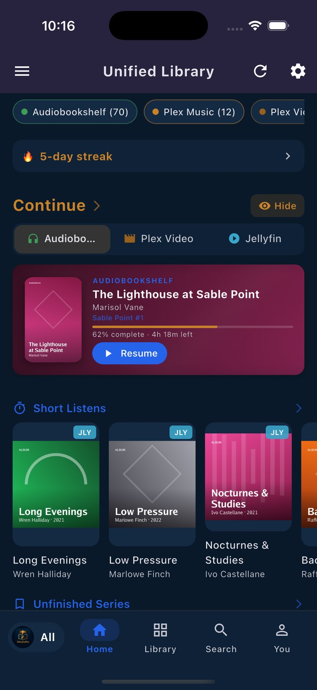
Version 3.2
Party Play, Live TV, three more services, Play Next for whole albums and recommendations built from your own library — alongside Alexandria for Apple TV. On the App Store now for iPhone, iPad and Apple Watch. Android gets Version 3.1, coming to Google Play.
Party Play
One clock for every room, kept by your own companion server. Play from your phone and every Apple TV or phone on your profile can join with one press — audiobooks and music, in step. Scheduled starts, per-device sync, and hand the lead to another device.
Alexandria for Apple TV
A real tvOS app (tvOS 18 or later), on the App Store now. Profiles with PINs, a sidebar built for the remote, Plex and Jellyfin films and TV, Plex Live TV, Plex and Navidrome music, and Audiobookshelf.
Three new services
Navidrome and other Subsonic servers with token sign-in (API 1.16.1). Custom OPDS for any standard 1.2 or 2.0 catalog, open or password-protected. And Stump, with your reading position synced back to the server.
Live TV & DVR
A guide for your Plex DVR on the phone and the Apple TV: what's on now, a time grid, and recordings you can schedule.
Discover & Radio
For You shelves on Audiobookshelf, Plex, Jellyfin, Kavita, Komga, Grimmory and Navidrome, built on your phone from what you play and read — every row says why. Plus stations like Rock Radio or 1970s Radio, made from the music on your servers: endless, and it behaves like radio, not shuffle.
Read-Along that lines itself up
Opens already in sync: it transcribes a moment of the narration on your phone, finds that place in the book's text and lines itself up, then stays lined up as you listen. Six page themes, from Paper and Sepia to True black.
What arrived in Version 3.0
Jellyfin, music and video
Playlists, a music-style home, artist pages, quality selector, Chromecast, CarPlay and Android Auto — and Jellyfin Video with collections, Continue Watching, resume, subtitles and audio tracks.
Grimmory
BookLore has been succeeded by Grimmory, and Alexandria fully supports it. Existing BookLore connections keep working unchanged.
Hi-res, untouched
Lossless FLAC streamed untouched — the original file, no transcoding — for Plex and Jellyfin. 24-bit and high-sample-rate files stream and play, powered by the mpv audio engine.
Offline, for real
Every Downloads section redesigned: series-grouped grids, cover art and summaries with zero network. Downloads open with no connection, and a server error no longer hides them.
Your whole library
Hidden list caps removed across every service — huge Komga series, 500+ item Jellyfin and Calibre libraries, every Kavita reading list.
Also in 3.0
Free with two services, a year in review (Alexandria Wrapped), notes in audiobooks and ebooks, a PDF reader for Audiobookshelf, Read-Along with the real book text, and the app in German.
What it does
Built for people who host their own.
Each server keeps its own strengths. Alexandria puts them on one screen, remembers where you were everywhere, and plays it back the way the format deserves.
One Home for everything
Continue on every server: a tab for each, holding the audiobook you fell asleep to or the episode you paused, and one See all that lists everything in progress together. Flip to a single server with the pill, or keep it all together.
- An All home with Continue, Recently Added, Unfinished Series and New from Authors You've Read
- For You shelves on the Audiobookshelf, Kavita, Komga, Grimmory, Plex, Jellyfin and Navidrome homes
- Your streak and nearest goal on every home, plus Short Listens: unfinished audiobooks under four hours
- Hold the server pill to jump to the next server; tap it to pick
- Home, Library, Search and You — four tabs, under your thumb
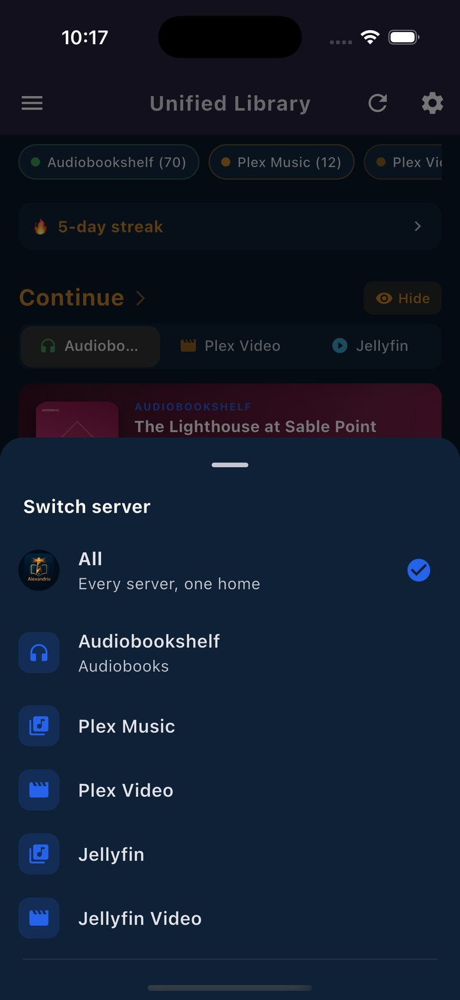
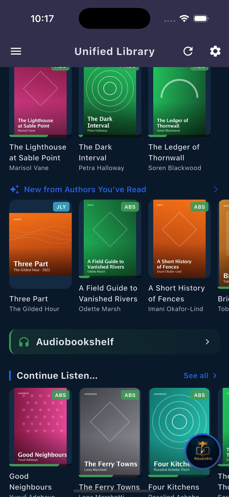
Audiobooks, done properly
Chapters, bookmarks, notes, a sleep timer that works with the phone locked, speed, and progress that syncs back to Audiobookshelf the moment you pause. The lock screen, CarPlay and your watch all show the same book.
- Read-Along: the text scrolls with the narration and re-syncs itself — the real text of a linked Storyteller book, or an on-device transcript of a downloaded Audiobookshelf book
- Audiobookshelf podcasts: play episodes, and have your server fetch new ones
- Frame-accurate seeking in downloaded VBR MP3s
- Audiobook ↔ ebook linking across services
- Reading plans, reminders and upcoming releases
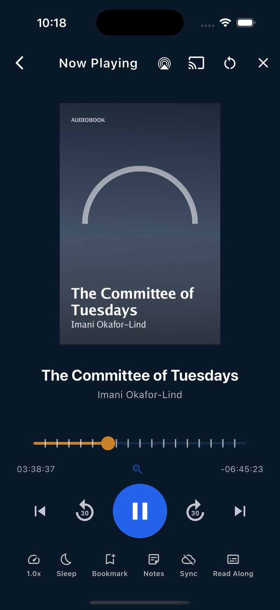
Music that keeps going
Plex, Jellyfin and Navidrome music in one app — and with Premium, in one queue, in the car too. Lossless FLAC streams untouched, with Original quality the default on Wi-Fi. Lyrics scroll in time, and when an album ends the library keeps playing in the same vibe.
- Radio stations built from each music server's own library — they keep going and avoid the same artist twice in a row
- Server-first recommendations, with an online lookup only as a fallback
- Hi-res 24-bit streaming on the mpv engine
- Chromecast for Plex and Jellyfin music, plus AirPlay, CarPlay and Android Auto
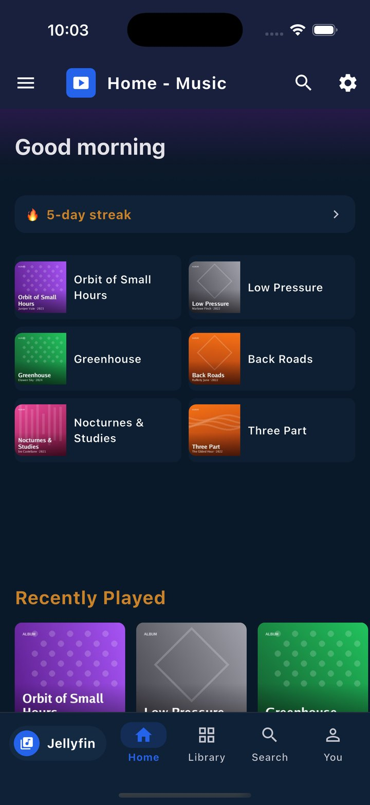
Film and TV, with your subtitles
Movies and shows from Jellyfin and Plex with collections, Next Up and Continue Watching. Pick the subtitle and audio track, set a sleep timer, Chromecast Plex films and shows to the TV — or open the Apple TV app, with its quality picker, and carry on from the same place.
- Resume anywhere; progress goes back to the server
- Download Plex films and episodes to watch offline (Jellyfin video downloads are on the roadmap)
- Live TV from your Plex DVR: a guide, what's on now, and recordings
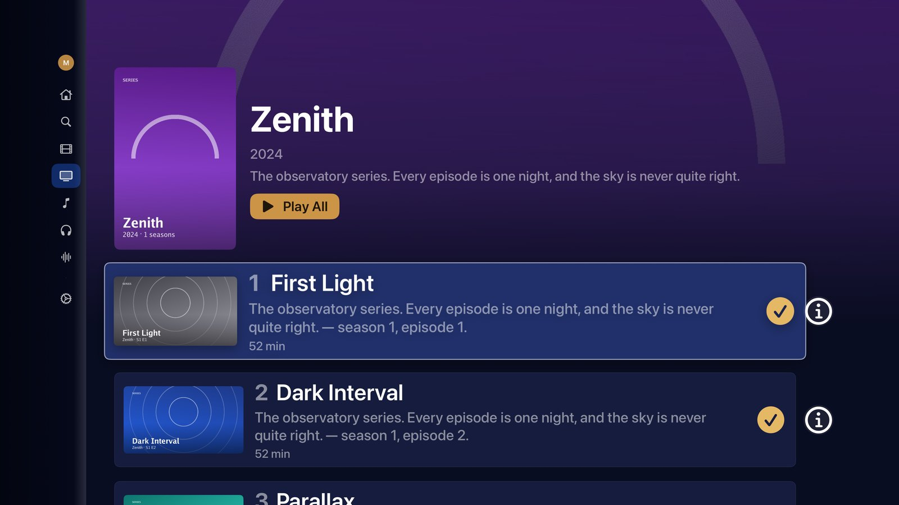
Your whole library, searchable
No silent cut-offs: Komga series past 20 books, Jellyfin libraries past 500 items, every Kavita reading list — all of it, grouped by series. One search box asks nine servers at once, and search works offline too: it shows what you own and on which server.
- One search across Audiobookshelf, Plex, Jellyfin, Kavita, Komga, Calibre, Calibre-Web, Grimmory and Storyteller
- One media index across your services (all but Kavita and Custom OPDS)
- Smart collections and series grouping
- Goodreads and StoryGraph import
- See how many titles you hold on more than one server, in Collection tools — and household-wide with the companion server
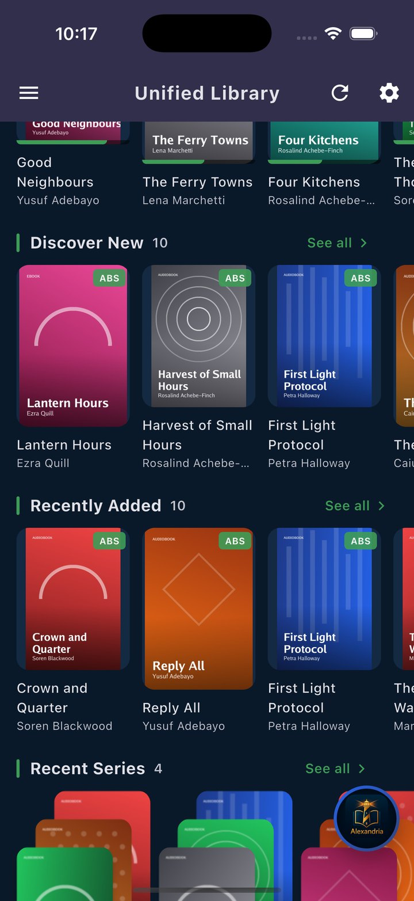
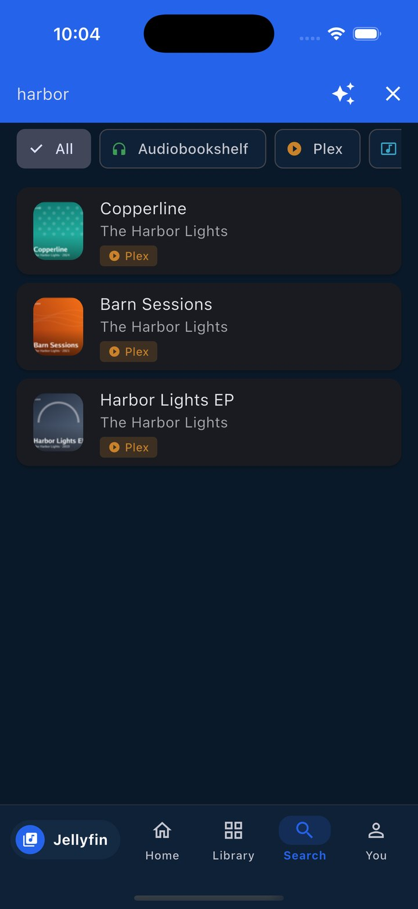
Statistics you can trust
Listening, reading and watching tracked as their own categories — no music inflating your audiobook hours — with per-source breakdowns, goals, streaks and a year in review you can share.
- Goals and reading plans with reminders
- Per-service totals and shareable year-end cards
- Stats stay on your devices or your own companion server, and reach an AI only if you connect one to the Librarian
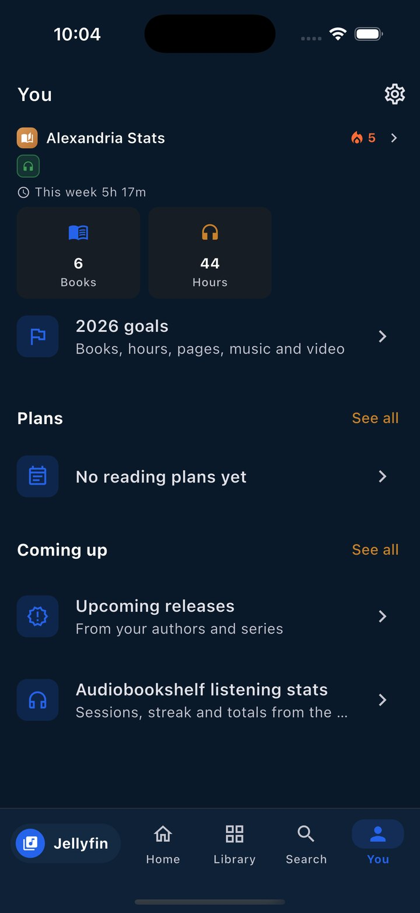
Offline, for real
Background downloads, whole series in one tap, and Downloads sections that open with zero network.
CarPlay & Android Auto
Audiobookshelf, Grimmory, Plex, Jellyfin and Navidrome in the car, with the live queue, source labels and resume. Premium takes the mixed queue along.
Apple Watch & Wear OS
Premium. Apple Watch plays Audiobookshelf, Plex, Jellyfin and Navidrome, with audiobooks and Plex albums offline. Wear OS plays and saves Jellyfin and Navidrome, and drives Audiobookshelf on your phone. Playback keeps going when the screen sleeps.
Chromecast & AirPlay
Chromecast for Audiobookshelf books, Plex and Jellyfin music, and Plex films and shows. AirPlay from the audiobook and music players.
Sign in your way
Passwords, API keys (Kavita, Stump), Plex link codes, and single sign-on for Audiobookshelf, Kavita, Komga, Grimmory and Storyteller in Settings › Edit Servers. Up to three servers per service, unlimited with Premium.
Widgets, Siri, Spotlight
Home-screen widgets on iPhone and Android, Live Activities, and Siri and Spotlight suggestions for what you were last playing or reading.
On the App Store · tvOS 18 or later
Alexandria for Apple TV
Your Audiobookshelf, Plex, Jellyfin and Navidrome servers, on the biggest screen in the house. Profiles for everyone on the couch, a sidebar built for the remote, Live TV from your Plex DVR, and Apple's own player — with your choice of version, audio track, subtitles and quality.

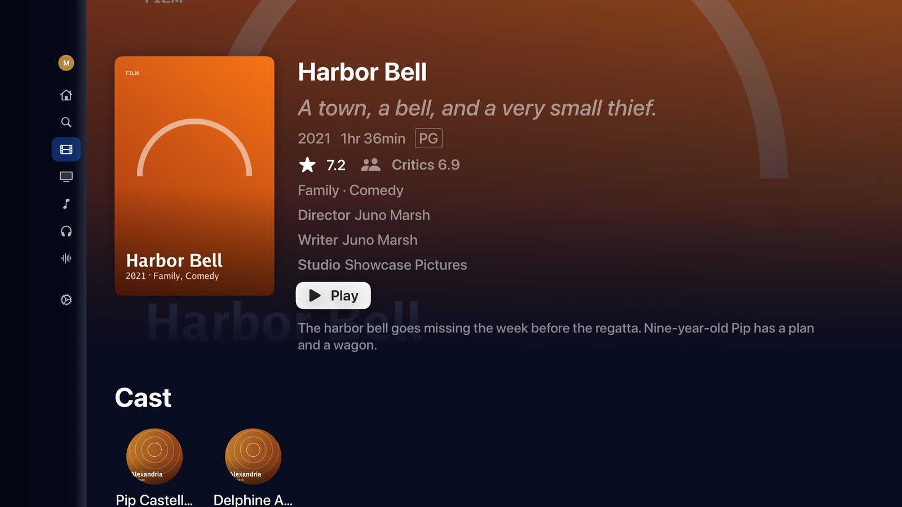
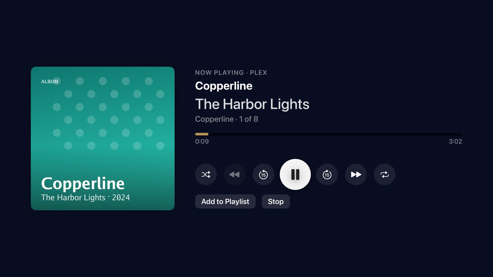
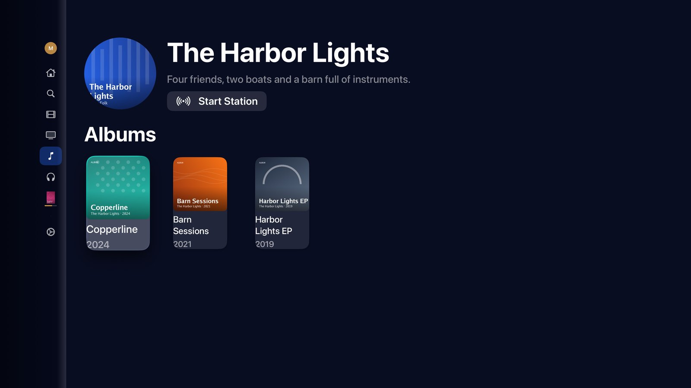

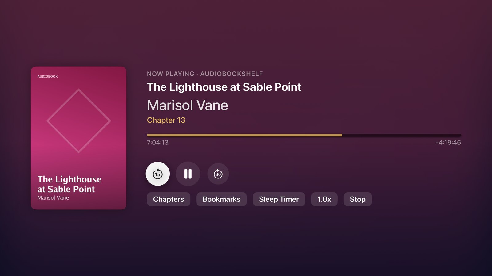
Profiles & PINs
Who's listening? Each person gets their own sign-ins, progress and Home, with an optional four-digit PIN. Sign in from the couch with a Plex code or Jellyfin Quick Connect.
Scrub previews
Scrub with picture previews when your server makes preview thumbnails (not on HDR titles). Skip Intro and Skip Credits from the server's markers, on the stock tvOS transport.
Party Play
Link the TV to your companion server and it joins the audiobook or music party your phone started with one press of Join & Play — starting on the party's shared clock, in step with the rest of the house.
Premium on Apple TV
Free with two kinds of server, three of each. Subscribe on the TV itself, or press Restore Purchases — an iPhone subscription on the same Apple Account already covers it.
Party Play
One clock. Every room.
Turn on sharing, play something on your phone, and every Apple TV linked to your profile can join with one press: the same song or audiobook, in step. Your other phones can follow along too, for Plex music and Audiobookshelf books. Starting a party is part of Premium; joining one is free. It runs on your own companion server.
The companion server keeps one clock for the party. Each device measures its offset to that clock and aims for the same instant, and you can fine-tune each Apple TV by ear for its soundbar or speakers.
- ⏱️Timed joins
An Apple TV buffers first, then starts at the leader's position on the party's clock instead of starting late and catching up. When an Apple TV leads, or your phone streams lossless, skips are announced a moment ahead so every room changes track together.
- 📏Per-device sync
Your phone's party dashboard lists every device in the party. A follower that slips more than a couple of seconds re-syncs itself to the leader.
- 🔁Make leader
During a music party, turn your phone sideways and hand the lead to any Apple TV or phone that's following — the music keeps playing. Stop on one device and the party plays on.
- 🏠Your server only
Party Play never relays audio: every device streams straight from your own media servers, and the sync runs only through your companion server. No Alexandria cloud sits in between.
clock
Optional · self-hosted
The companion server
A small, free container for any box in the house, x86 or ARM. It never holds your media and never talks to the outside; it holds the things a household shares.
- People, not accounts. Profiles for everyone, each device linked with a six-character code. Phones and Apple TVs find the server on your network with one press.
- One index across your servers. It tells you which works sit on more than one server — and only ever reports them. (Kavita and Custom OPDS libraries aren't indexed.)
- Statistics that stay home. Listening and reading history per person, kept in one SQLite file you can back up with a button.
- The party's clock. Scheduled starts, drift read-outs and leader handover for Party Play.
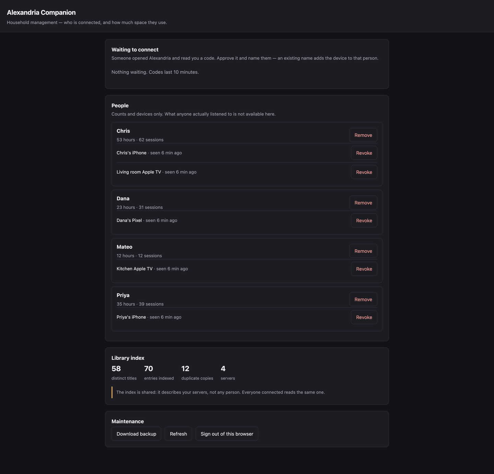
Companion server · install
Install it with Docker.
On any 64-bit machine that stays on: a NAS, a Raspberry Pi 4 or 5, a Linux box, or a Mac or Windows PC with Docker Desktop. It idles at about 20 MB of memory and needs port 4000 on your home network.
Start the server
On Linux or macOS, this sets it up in ~/alexandria-server, starts it, and prints your admin token. Keep the token somewhere safe: it is the master key.
curl -fsSL https://raw.githubusercontent.com/stoutc24/alexandria-server/main/scripts/install.sh | bashOn Windows, or rather use Docker Compose?
Make a folder with these two files, then run docker compose up -d in it.
services:
alexandria-server:
image: ghcr.io/stoutc24/alexandria-server:latest
container_name: alexandria-server
restart: unless-stopped
ports:
- "4000:4000"
volumes:
- alexandria-data:/data
environment:
- ALEXANDRIA_API_TOKEN=${ALEXANDRIA_API_TOKEN:?set ALEXANDRIA_API_TOKEN in .env}
- ALEXANDRIA_SERVER_NAME=${ALEXANDRIA_SERVER_NAME:-Alexandria Companion}
- ALEXANDRIA_PUBLIC_URL=${ALEXANDRIA_PUBLIC_URL:-}
- ALEXANDRIA_TRUSTED_PROXIES=${ALEXANDRIA_TRUSTED_PROXIES:-}
- TZ=${TZ:-UTC}
volumes:
alexandria-data:ALEXANDRIA_API_TOKEN=<your token>
ALEXANDRIA_SERVER_NAME=Living Room NASFor the token, use openssl rand -hex 32, or a long random password from your password manager. The server won't start with one shorter than 16 characters.
Set up your admin login
Open http://<server address>:4000/admin in a browser and enter the admin token. Then choose a password, add the login to your authenticator app, and keep the ten recovery codes it shows you.
Link your devices
On a phone, open Settings › Companion Server, tap Find my server on this network, then Get a link code. Approve the code on the admin page, naming whose device it is.
On Apple TV: Settings › Companion Server › Link Companion Server › Find My Server. Watches link through their phone.
Updating. In the server's folder, run docker compose pull && docker compose up -d. People, devices and statistics live in the data volume and survive updates.
Everything else. Settings, reaching it from outside your home over HTTPS, backups and troubleshooting are in the full guide on GitHub.
Everywhere you are
One library, seven screens.
Standard & Premium
Free with two services. Premium opens all twelve.
Alexandria is free with two services, up to three servers each. Premium lifts the limits and unlocks the features that span your services.
- Two services, swappable every 30 days
- Up to three server connections for each of those services
- Audiobooks, podcasts, ebooks, comics, music, films and TV shows — plus Plex Live TV — from those services
- Offline downloads and background playback
- All built-in readers — EPUB, PDF and comics
- Read-Along for Audiobookshelf audiobooks, the follow-as-you-listen teleprompter, on supported devices
- Music queues of any length from one service — Plex, Jellyfin or Navidrome — with shuffle and reordering, plus an Up Next queue for your audiobooks
- Radio stations from each music service's own library
- CarPlay, Android Auto, Chromecast and AirPlay
- Statistics, goals and reading plans
- Sleep timer, synced lyrics, and search across both services
- Join a Party Play session on any of your devices, with your own companion server
- Bug reports — free on every plan
- All twelve services — connect as many servers as you run
- Unlimited servers per service — a fourth Plex server and beyond, if that is your setup
- Start Party Play from your phone: every Apple TV and phone in the house plays along in step
- The cross-service queue: mix Plex, Jellyfin and Navidrome in one queue and play straight through
- That same mixed queue in CarPlay and Android Auto
- The Apple Watch and Wear OS apps, with downloads on the wrist
- Bring your own AI: ask The Librarian about your library, or describe a playlist and get one built from every music service
- Priority support — email the developer straight from the app
Buy Premium in the app on iPhone, iPad, Android or Apple TV. On Apple devices one purchase covers iPhone, iPad and Apple TV on the same Apple Account (tap Restore Purchases on the other device), and the Apple Watch app follows its iPhone. Google Play purchases cover Android and Wear OS. Nothing you download to your phone ever stops being yours, and watch downloads stay on the watch, ready when Premium is back. Playback of a single service is never limited on your phone, your Apple TV or in the car.
Screenshots
A closer look.
Tap any screen to enlarge it. The screens on this page are from Version 3.1 with Premium, on a staged library — the titles are invented, so nothing you see belongs to anyone else.
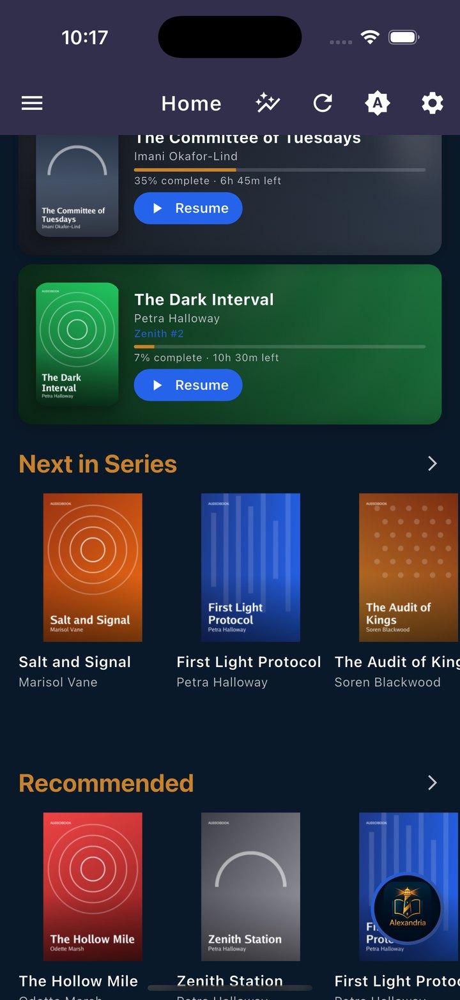
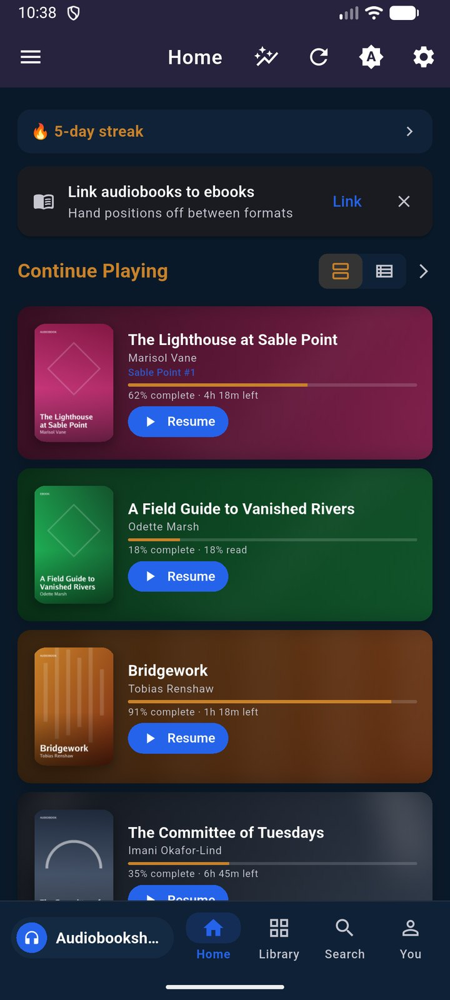

Roadmap
Where it is going.
Shaped by what people ask for on Reddit and by email. No dates are promised.
In progress
Party Play, Live TV, the three new services and Discover for Android, waiting on Google Play's review.
A public download and install guide for the small server behind Party Play and household statistics.
Planned
Apple Watch and Wear OS join a party as their own devices and play it on headphones paired to the watch. The watch apps are Premium.
Plex films and episodes already download for offline viewing; Jellyfin is next.
Each has its own search today; next they join the all-server Search, and Custom OPDS joins the offline index.
Your Continue row on the Apple TV Home screen.
Early groundwork for Samsung (Tizen) TVs.
Out now on the App Store
Profiles with PINs, Plex and Jellyfin films and TV, Plex Live TV, Plex and Navidrome music, Audiobookshelf and Party Play.
One shared clock, scheduled starts, a per-device sync readout and Make leader from the phone. The next song is announced ahead, so every room changes track together. Needs the Alexandria companion server.
Approve new devices, manage people and their devices, and download a backup — no laptop needed.
A guide and recordings for your Plex DVR, on the phone and the Apple TV.
Artists, albums, playlists, favourites, search and offline downloads.
Open or password-protected OPDS 1.2 and 2.0 catalogs. Stump also signs in with an API key (OIDC accounts included) and syncs your reading position both ways.
For You shelves and radio stations made only from what is on your servers.
Bug reports
Found a bug?
Please include your device model, OS version, the Alexandria version and the steps to reproduce it.
Report a bugKnown issues
An interrupted download can stay stuck on “downloading” or leave a broken file. Delete it in the Download Manager and download it again.
The watch still sends its Jellyfin sign-in the older way, which Jellyfin 12 turns off by default, so Jellyfin may not play on the watch.
An Android phone doesn't pass its server sign-ins to the watch yet; sign in on the watch itself.
A track that fails every time stays on “Downloading”.
In Version 3.2
An iPhone that joins a party starts about a second behind.
Type your Jellyfin server's address for now.
First run and Add Connection don't offer SSO yet, so an SSO-only Audiobookshelf account can't finish setup.
None on HDR titles, and Plex needs “Generate video preview thumbnails” turned on.
Recently fixed
Every fix here is in Version 3.2 on the App Store and in Alexandria for Apple TV. Android picks up the newer ones with Version 3.1.
Followers could lose a second or two at each new track. Each next song is now announced ahead, so every room changes track together.
Comics read online now go past page 50.
Stopping on your phone no longer pauses the Apple TVs, and Leave now pauses the phone.
Titles that failed with “Cannot open” now play, and a stalled stream restarts itself.
Playing the next episode from Up Next showed a black screen with sound; it now shows the picture.
Signs in with Jellyfin's standard header on the phone and the Apple TV.
A song removed from the queue no longer plays.
Audiobookshelf downloads work on servers without HTTPS — first reported by email.
Downloaded books keep their series and number.
Pausing an audiobook keeps Alexandria in Now Playing, so AirPods resume the book.
Feature requests
Have an idea?
Help shape what comes next — a feature, an improvement, or a server you would like to see supported.
Request a featureRequests we've built
Navidrome and other Subsonic servers that accept token sign-in.
Custom OPDS: any open or password-protected OPDS 1.2 or 2.0 catalog.
From the “exploring” list to the App Store: Alexandria for Apple TV is out now.
Download Series — one tap queues an entire series.
Cast Jellyfin music to a Chromecast.
OIDC for Audiobookshelf, Kavita, Komga, Grimmory and Storyteller from Settings › Edit Servers; Kavita also signs in with an API key alone.
Fades out, shake to extend, your own presets — and it keeps counting with the phone locked.
Tap Scan to find Audiobookshelf servers on your Wi-Fi; Plex sign-in lists your servers for you.
FAQ
Questions people ask.
The app
Why did the music stop when my playlist or album ended?
When a queue runs out, Keep the music going (Settings › Playback, on by default) carries on from your own Plex, Jellyfin or Navidrome library. It looks at the album that just finished and builds a mix of at least two artists that share its genre or its artist. You get a mix, never one band's whole discography, and never a guess.
If that album has no genre tag on your server, or nothing else in your library shares its genre or artist, there is nothing it can honestly follow it with, so playback stops. Add a genre to that album on your server and it will carry on next time. It uses only your own library; no online service is involved.
What's free, and what does Premium add?
Alexandria is free with two services, up to three servers each, and you can swap a service every 30 days. Premium opens all twelve services and unlimited servers. It also adds starting a Party Play session, the cross-service music queue, the Apple Watch and Wear OS apps, and bring-your-own AI. Joining a party stays free. Pricing has the full list.
Is there an Apple TV app?
Yes, on the App Store now, for tvOS 18 or later. It plays from Plex, Jellyfin, Audiobookshelf and Navidrome. See Apple TV.
Does Alexandria collect my data?
No. There are no analytics, no ads, no tracking, and no account with us. Alexandria connects straight to your own servers, and your sign-ins stay on your device. A few features send titles and names, never your sign-ins, to look up lyrics, recommendations and release dates. The privacy policy lists each one.
How do I report a bug or ask for a feature?
Use the buttons under Support to email us, or post on r/AlexandriaMediaLib2. For a bug, include your device, its OS version and your Alexandria version.
The companion server
Do I need the companion server?
No. Alexandria works fully without it. The companion server is an optional small container you run at home. It adds Party Play, listening statistics for each person in your household, and one library index across your servers. Install shows how to set it up.
What do I need to run it?
Docker, on a 64-bit machine that stays on: most NAS boxes, a Raspberry Pi 4 or 5 on a 64-bit OS, or any PC or Mac. It needs port 4000 on your home network, and Alexandria 3.1 or later on your phone. It idles at about 20 MB of memory.
Is it free?
Yes. The companion server is free to download and run on your own hardware.
Does it see my media, or send anything to you?
No. It never holds your media or your media-server sign-ins; those stay on each device. It makes no outbound connections and sends nothing to us. Each person's statistics stay in one database file on your machine, and the admin page shows counts and dates, never what anyone listened to or read.
Can I use it away from home?
Yes, behind an HTTPS reverse proxy such as Caddy or nginx. Set ALEXANDRIA_PUBLIC_URL to that address and linked phones are told about it. The guide's outside your home section has examples for both.
“Find my server” doesn't find it. What now?
The apps search your device's own network on port 4000. Check that the phone or TV is on the same network as the server (not a guest network), that the server is on port 4000, and that no firewall blocks it. You can always type the address instead, such as 192.168.1.50:4000.
Community
Get help, share feedback, compare setups.
Ask questions, show off your setup, and help decide what comes next.